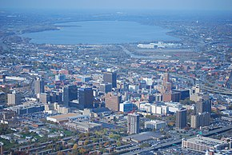

Syracuse
Welcome to Syracuse!
Syracuse is more than just a city—it's a place with a fascinating past that has shaped its present. Established in 1825, the city thrived because of the Erie Canal, which turned Syracuse into a bustling hub of commerce and industry. The canal was a game-changer, helping goods and people move quickly across the state and beyond. You can still get a taste of that era by visiting the Erie Canal Museum, which gives you a glimpse of how the canal transformed the region. Syracuse is also known as “Salt City” because, in the 19th century, it was the nation's leading producer of salt. Visit the Salt Museum at Onondaga Lake Park to learn about how this humble mineral shaped the city's development. Beyond its industrial roots, Syracuse played an important role in the fight for equality. It was a key stop on the Underground Railroad, helping runaway slaves on their journey to freedom. The legacy of those courageous actions can still be explored through historic sites like the Jerry Rescue Monument in Clinton Square and the city's rich abolitionist history at the Onondaga Historical Association. Today, Syracuse blends its history with innovation and a close-knit community spirit. From the revitalization of Armory Square to the energetic buzz around Syracuse University, the city continues to evolve while holding onto its storied past. Explore Syracuse through my eyes, and I promise you'll fall in love with this city, just like I did.